被験者
SCR-SUBJ-001·002·003·004·009·017 · 一覧 · 登録 · 詳細 · ステータス変更
被験者一覧
- 1.1画面構成
- 1.2検索 · 並べ替え · フィルター
- 1.3表の列構成と行アクション
- 1.4新規被験者登録
1.1画面構成
概要
プロジェクトに登録された被験者をまとめて確認する画面です。被験者業務の出発点で、登録・ステータス変更・来院・データ入力へ進む経路はすべてこの一覧から分かれます。参加施設のみを担当するロールには、その施設の被験者だけが表示されます。
画面説明
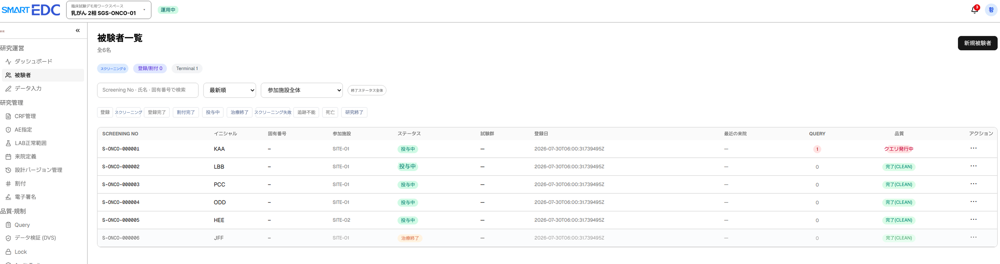
新規被験者 — 被験者を新たに登録します 1.4。登録権限がないか、プロジェクトが終了・保管状態の場合、このボタンは表示されません。
検索 · 並べ替え · 参加施設 · 終了ステータス全体 — 一覧を絞り込む4つの手段です 1.2。
ステータスフィルター — 10種類のステータスから選んで絞り込みます 1.2。
左のメニューの研究運営 > 被験者 から、いつでもこの一覧に戻れます。
全N名 — フィルターを適用した後の総人数です。現在のページに表示されている行数とは異なる場合があります（1ページに20名）。
集計バッジ3種 — スクリーニング · 登録/割付 · Terminal です。下の注意事項を確認してください。
表 — 被験者1名が1行です。行を選択すると、その被験者の画面に移動します 1.3。
画面上部で、ワークスペースとプロジェクトを切り替えられます。プロジェクトを変えると、一覧の内容も変わります。
注意事項
必須確認 データ破損 · フォーム完了不可
- • 集計バッジ3種の合計は総数と一致しません。登録と投与中のステータスは、この3つのバッジのどれにも集計されないためです。例えばキャプチャは、6名のうち5名が投与中ですが「登録/割付 0」と表示されます。人数は「全N名」とステータスフィルターで確認してください。
1.2検索 · 並べ替え · フィルター
概要
一覧を絞り込む手段は5つあり、互いに重ねて適用されます。条件を変えると、ページ番号は1ページ目に戻り、総人数も計算し直されます。
画面説明
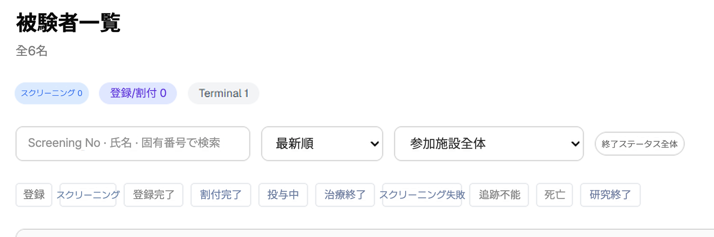
検索 — Screening No · 氏名 · 固有番号の3つで探せます。入力を止めると、しばらくして自動で検索されます。
並べ替え — 最新順 · Screening No · 登録日 · ステータス順から選択します。初期値は最新順です。
参加施設 — 特定の施設の被験者だけを表示します。アクセスできる施設が2か所以上ある場合にのみ表示されます。自施設のみを担当するロールには、代わりに自施設固定バッジが表示されます。
終了ステータス全体 — Terminal 5種（スクリーニング失敗 · 治療終了 · 追跡不能 · 死亡 · 研究終了）を一度に選択、または解除します。
ステータスフィルター — 10種類のステータスを1つずつ選択します。複数を一緒に選ぶと、そのいずれかに該当する被験者が表示されます。選択されたチップは色が塗られます。
全N名 は、現在適用されている条件に合う総人数です。
集計バッジ3種は現在のページに読み込まれた行だけを数え、登録・投与中のステータスはどのバッジにも含まれません（1.1 注意事項参照）。
タイトルの下の領域全体がフィルター領域です。条件を解除するには、選択されたチップをもう一度選択してください。
注意事項
誤解しやすい動作
- • 検索は氏名でもできます。ただし表には、氏名の代わりにイニシャルが表示されます。氏名は個人識別情報のため、全ロールが閲覧する一覧には置いていないからです。
1.3表の列構成と行アクション
概要
表は11の列で構成されます。左半分は誰か（識別・所属・ステータス）、右半分はどの状態か（来院・Query・品質）を示します。右端のアクション列から、その被験者の画面に移動します。
画面説明
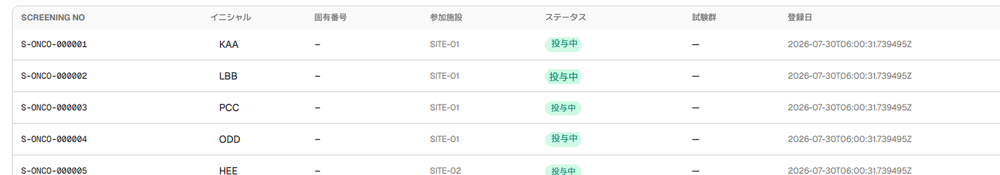
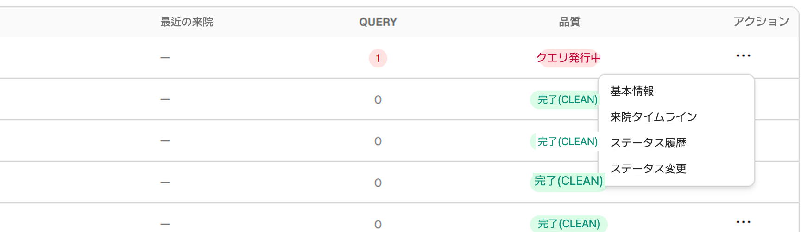
⋯ — 行アクションメニューを開きます。その場でメニューが開くため、行は移動しません。
メニュー項目は4つです。下の一覧を参照してください。ステータス変更 は、Terminal ステータスの被験者、または権限がない場合は選択できません。
列の順番 — Screening No · イニシャル · 固有番号 · 参加施設 · ステータス · 試験群 · 登録日 です。氏名の代わりにイニシャルが表示されます。
Screening No はシステムが自動で採番する識別番号です。固有番号 は研究のコード体系に従って人が入力する、別の軸の番号です。値がない場合は—と表示されます。
Query — 未解決のQuery件数です。1件以上あると赤く表示されます。
品質 — 検証待ち · SDV完了 · クエリ発行中 · クエリ回答済み · 完了(CLEAN) の5種のいずれかです。
最近の来院 列は、現在すべての行で—と表示されます。来院の実施日は来院タイムラインで確認してください 2.3。
⋯ アクションメニューの4つ
- • 基本情報 — 被験者の詳細画面 2.1
- • 来院タイムライン — 予定・実施済みの来院すべて 2.3
- • ステータス履歴 — ステータスが変わった記録 3.3
- • ステータス変更 — 遷移先を選ぶウィンドウ 3.1
注意事項
誤解しやすい動作
- • 行を直接選択した場合と、メニューの「基本情報」では、到着する画面が異なります。行を選択すると複数の領域を1画面にまとめた Patient Profile に移動し、メニューの基本情報は、人的事項・登録情報を中心とした詳細画面 2.1 に移動します。
1.4新規被験者登録
概要
被験者を新たに登録します。* の付いた項目はすべて入力しないと保存できません。ICF同意日を入力したかどうかで作成されるステータスが変わるため、同意書をすでに受け取っている場合は、ここで一緒に入力するとステータス遷移を1回減らせます。
画面説明
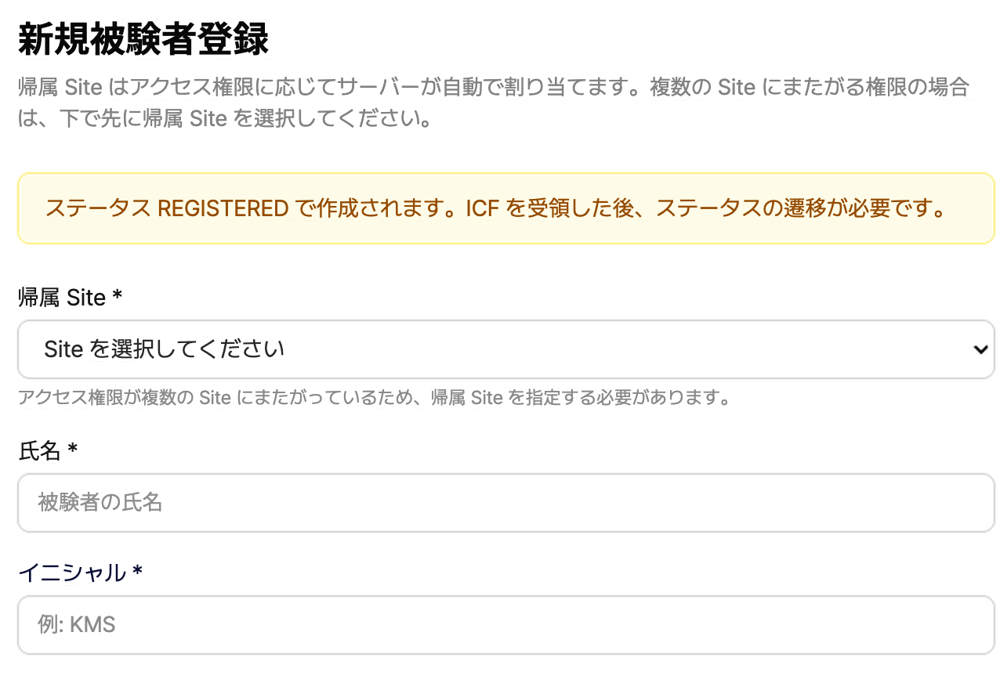

帰属 Site * — 被験者が所属する参加施設です。アクセス権限が2か所以上にまたがる場合にのみ表示されます。1か所だけの場合は、システムが自動で割り当てます。
氏名 * — 個人識別情報です。一覧には表示されません。
イニシャル * — 一覧に表示される略称です。氏名から自動では作られないため、直接入力します。
生年月日 — 任意項目です。今日より後の日付は選択できません。
性別 * — 男性 · 女性 · その他 · 不明の中から選択します。
ICF同意日 — 任意項目ですが、作成されるステータスを決めます。入力するとスクリーニング、空欄にすると登録ステータスで作成されます。今日より後の日付は入力できません。
固有番号 * — 研究のコード体系に従った識別番号です。最大50文字で、プロジェクト内で重複させることはできません。
保存 — 必須項目がすべて入力されるまで薄く表示されます。ICF同意日を入力した場合は、保存後にその被験者の詳細画面へ、空欄の場合は一覧へ移動します。
ヘッダーの案内 — 帰属施設はアクセス権限に応じてシステムが割り当てます。複数の施設にまたがる場合にのみ、直接選択します。
バナーで、作成されるステータスを事前にお知らせします。ICF同意日を入力すると、バナーの文言がスクリーニングに変わります。
選択欄の下に、なぜ施設を指定する必要があるかが案内されます。
キャンセル — 入力内容がある場合は、破棄するかどうかを先に確認します。
固有番号欄の下に、重複不可の案内が表示されます。重複かどうかは保存時にシステムが判定するため、入力中は知らされません。
Screening No は入力項目ではありません。保存時にシステムが自動で採番します。
注意事項
必須確認 データ破損 · フォーム完了不可
- • 固有番号が他の参加施設ですでに使われていても、入力中は分かりません。自施設のみを担当するロールには、他の施設の被験者が一覧に表示されないためです。保存時に重複として拒否された場合は、研究のコード体系を確認したうえで別の値を入力してください。
被験者詳細
- 2.1画面構成
- 2.2基本情報 · 登録情報の編集
- 2.3来院タイムライン
2.1画面構成
概要
一人の被験者の人的事項・登録情報・割付・ステータスを、上から下へ積み上げて表示する画面です。ステータスを変える3つのアクションも、この画面の下部にまとめられています。
画面説明
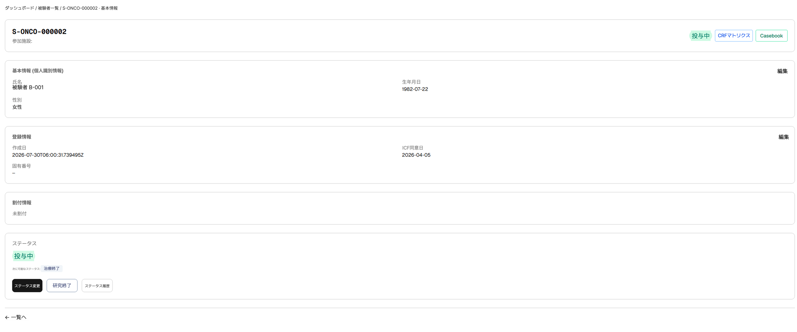
基本情報（個人識別情報） > 編集 — 氏名・生年月日・性別を修正します 2.2。権限がない場合、このリンクは表示されません。
登録情報 > 編集 — 固有番号を修正します 2.2。
ステータス変更 — 遷移先を選ぶウィンドウを開きます 3.1。遷移できるステータスがない場合、または完全ロックの状態では選択できません。
研究終了 — 研究終了（EOS）専用の画面に移動します 3.2。投与中または治療終了のステータスで、権限がある場合にのみ表示されます。
ステータス履歴 — ステータスが変わった記録を照会します 3.3。
移動経路から一覧に戻れます。画面の一番下の← 一覧へも同じ場所に移動します。
ヘッダーのステータスバッジは、下のステータスカードのバッジと同じ値です。ロックがかかっている場合は、ロックのバッジも一緒に表示されます。
CRFマトリクス · Casebook — その被験者のCRF入力状況と、データ出力につながる別の画面です。本分冊では扱いません。
次に可能なステータス — システムが計算した遷移可能なステータスです。ここにないステータスには変更できません。
割付情報 — 無作為割付の前は未割付です。割り付けられると、試験群と割付番号が表示されます。
固有番号が—なのは、必須入力に変わる前に登録された被験者だからです。編集で値を入力できます 2.2。
注意事項
誤解しやすい動作
- • ヘッダーの参加施設 が空欄で表示されることがあります。詳細画面が施設コードを受け取れなかったために起きる現象で、被験者に所属がないという意味ではありません。所属施設は一覧の参加施設 列で確認してください。
2.2基本情報 · 登録情報の編集
概要
基本情報 と 登録情報 は別々のカードで、保存も別々に行います。一方を編集している間、もう一方は閲覧状態のまま残ります。両方のカードを修正した場合は、保存を2回押す必要があります。
画面説明
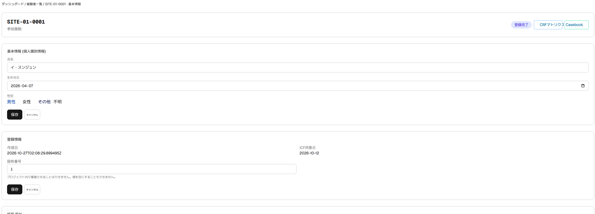
氏名 — 空欄にはできません。空欄の場合、保存ボタンが薄く表示されます。
生年月日 — 日付を選択します。
性別 — 男性 · 女性 · その他 · 不明の中から選択します。
保存（基本情報） — 人的事項の3項目のみ反映します。
固有番号 — 研究のコード体系に従った識別番号です。値を空にすることはできません。空欄のまま保存すると拒否されます。
保存（登録情報） — 固有番号のみ反映します。
キャンセル — 変更を破棄し、そのカードだけ閲覧状態に戻します。
登録情報にも同じキャンセルがあります。
作成日とICF同意日は読み取り専用です。編集状態でも入力欄には変わりません。
固有番号欄の下に、重複不可と空欄不可が併せて案内されます。
ヘッダーのカードは編集中も変わりません。ステータスバッジと移動ボタンはそのまま残ります。
注意事項
必須確認 データ破損 · フォーム完了不可
- • 氏名・生年月日・性別の編集は、個人識別情報の閲覧権限と修正権限の両方を持つロールだけが行えます。研究責任者（PI）は値を見ることはできますが修正はできないため、編集リンクは表示されません。固有番号の編集は、修正権限だけで可能です。
2.3来院タイムライン
概要
一人の被験者の来院を段階ごとにまとめて表示する画面です。計画日・実施日・許容誤差・実施の有無、紐づけられたCRFの入力状態を1行で確認できます。来院管理全般は来院分冊で扱い、ここでは被験者から入ったときに見える内容だけを説明します。
画面説明

来院手動追加 — 計画になかった来院を追加します。Terminal ステータスの被験者には表示されません。
Cycle 手動追加 — 周期来院グループの次の周期を一度に展開します。周期グループがあるプロジェクトでのみ表示されます。
来院グループ / Gantt タイムライン — 表示方法を切り替えます。初期表示は、段階ごとに折りたたみ・展開できる来院グループです。
移動経路または左上の矢印で、入ってきた場所に戻れます。
要約行 — Screening No · 固有番号 · 氏名 · ステータス · 参加施設とともに、全N件 · 来院実施 · 来院進行中 · 来院予定 · 未来院 の集計が表示されます。
段階の見出し行 — 選別段階・治療段階のように来院をまとめる単位です。（ ）内はその段階の来院数で、試験群があれば併せて表示されます。
来院1行 — 基準（どの日付から数えるか） · 計画日 · 実施日 · 許容誤差 · 実施状態 の順で表示されます。
来院にCRFが紐づいている場合、その名前と入力状態が下に続きます。紐づくCRFがない場合は紐づくCRFなしと表示されます。
計画日を過ぎても実施されていない来院は、✗ 未来院として赤く表示され、計画日に下線が付きます。
注意事項
誤解しやすい動作
- • この画面は来院領域の画面で、被験者一覧とデータ入力の両方から入ります。入ってきた経路によって、左上の矢印が戻る場所が変わります。
ステータス変更
- 3.1遷移先の選択
- 3.2研究終了
- 3.3ステータス変更履歴
3.1遷移先の選択
概要
今のステータスから遷移できるステータスだけを選んで表示します。選択肢は現在のステータスと自分のロールの2軸で絞り込まれるため、人によって表示が異なる場合があります。選択肢が空の場合は、遷移先がないか、権限がないということです。
画面説明
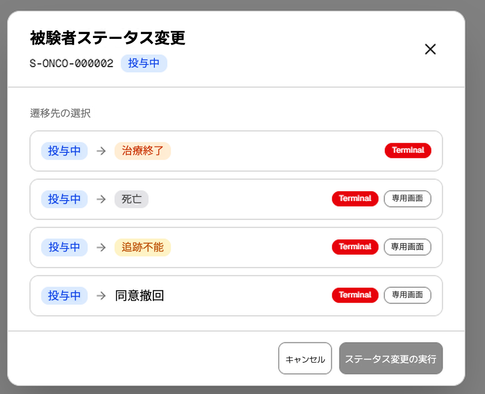
投与中 → 治療終了 — 選択すると、治療終了の理由5種が続けて表示されます。正常完了だけはこのウィンドウで直接処理され、それ以外の理由は、来院予定の整理が後に続く早期終了専用の画面に移動します。
投与中 → 死亡 — 死亡処理専用の画面に移動します。
投与中 → 追跡不能 — 追跡不能処理専用の画面に移動します。
投与中 → 同意撤回 — 同意撤回専用の画面に移動します。撤回には電子署名が必要です。
ステータス変更の実行 — 遷移先を選ぶまでは薄く表示されます。専用画面バッジが付いた遷移を選ぶと、ボタン名が専用画面へ移動に変わります。
ウィンドウの上部に、対象の被験者と現在のステータスが表示されます。別の被験者でないか、ここで確認してください。
選択肢の右側にあるバッジ2種 — Terminal は元に戻せない遷移であることを示し（選択するとウィンドウ内に警告も表示されます）、専用画面は、このウィンドウでは完結せず別の画面で処理することを示します。
キャンセル — 何も変更せずにウィンドウを閉じます。
ウィンドウの外をクリックした場合や、閉じるを選択した場合も同じです。
注意事項
必須確認 データ破損 · フォーム完了不可
- • 研究終了（EOS）はこのウィンドウにはありません。専用画面でのみ行い、被験者の詳細画面にある研究終了ボタンが唯一の入口です 3.2。また、ロックがかかった被験者はTerminalの選択肢がすべて薄く表示されるため、先にロックを解除する必要があります。
3.2研究終了
概要
被験者の研究参加を最終的に終える画面です。投与中または治療終了のステータスでのみ実行でき、プロジェクトの署名ポリシーに応じて電子署名が求められます。元に戻せない遷移のため、日付と理由を確認してから実行してください。
画面説明
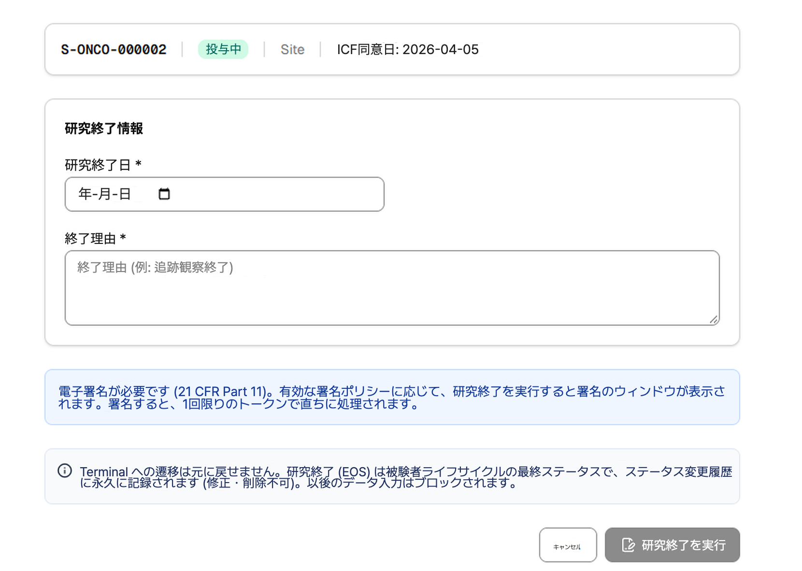
研究終了日 * — 必須入力です。今日より後の日付は選択できず、ICF同意日より前の日付を入れると、確認を求める文言が表示されます。
終了理由 * — 必須入力です。ステータス変更履歴にそのまま残るため、「例: 追跡観察終了」のように事実を書いてください。
研究終了を実行 — 必須の2項目が入力されるまで薄く表示されます。電子署名が必要な設定の場合は、選択した直後に電子署名のウィンドウが表示され、署名を完了して初めて終了が実行されます。
対象被験者の要約 — Screening No · 現在のステータス · 参加施設 · ICF同意日が表示されます。
青い案内 — 署名ポリシーが有効な場合、実行時に電子署名のウィンドウが表示されることの予告です。署名ポリシーがないプロジェクトでは、この案内は表示されません。
グレーの案内 — 研究終了は元に戻せず、ステータス変更履歴に永久に記録され、以後のデータ入力がブロックされるという説明です。
キャンセル — 何も実行せず、入ってきた場所に戻ります。
注意事項
必須確認 データ破損 · フォーム完了不可
- • 研究終了は元に戻せず、以後のデータ入力はブロックされます。未解決のQueryや未入力のCRFが残っていないか、先に確認してください。ロックがかかった被験者は終了が拒否されるため、先にロックを解除する必要があります。
3.3ステータス変更履歴
概要
その被験者のステータスが、いつ · 誰が · なぜ変わったかを時系列で表示する画面です。監査証跡のデータのため、記録を修正または削除することはできず、照会のみ可能です。
画面説明
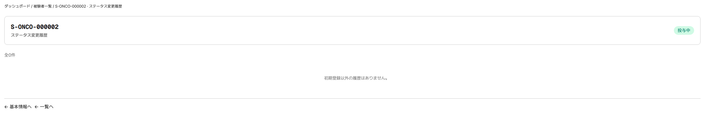
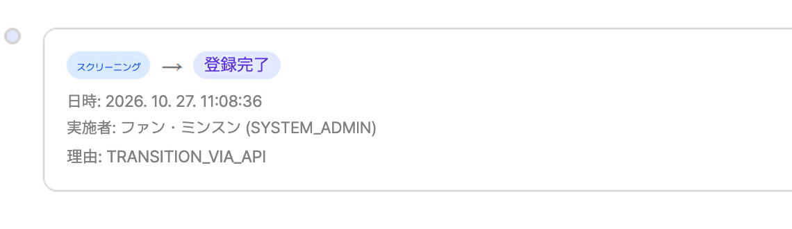
← 基本情報へ — その被験者の詳細画面に戻ります 2.1。
← 一覧へ — 被験者一覧に戻ります 1.1。
全N件 — 記録されたステータス変更の件数です。
記録がない場合は「初期登録以外の履歴はありません。」と表示されます。登録後、ステータスが一度も変わっていないという意味です。
ヘッダーのバッジは現在のステータスです。下の記録の最後のステータスと同じである必要があります。
カードの見出し — 変更前のステータス → 変更後のステータス です。ロックを越えて実行された遷移には、Lock Overrideバッジが併せて付きます。
日時 — 遷移が実行された時刻です。
実行者 — 氏名とロールが併せて記録されます。
理由 — 遷移時に入力した理由です。システムが自動で実行した遷移には、その経路を示すコードが記録される場合もあります。
注意事項
誤解しやすい動作
- • 現在のステータスが投与中なのに、全0件と表示される場合があります。画面の不具合ではなく、その被験者のステータス変更が記録として残っていない場合です。遷移の経緯を確認する必要がある場合は、Audit Trail も併せて照会してください。